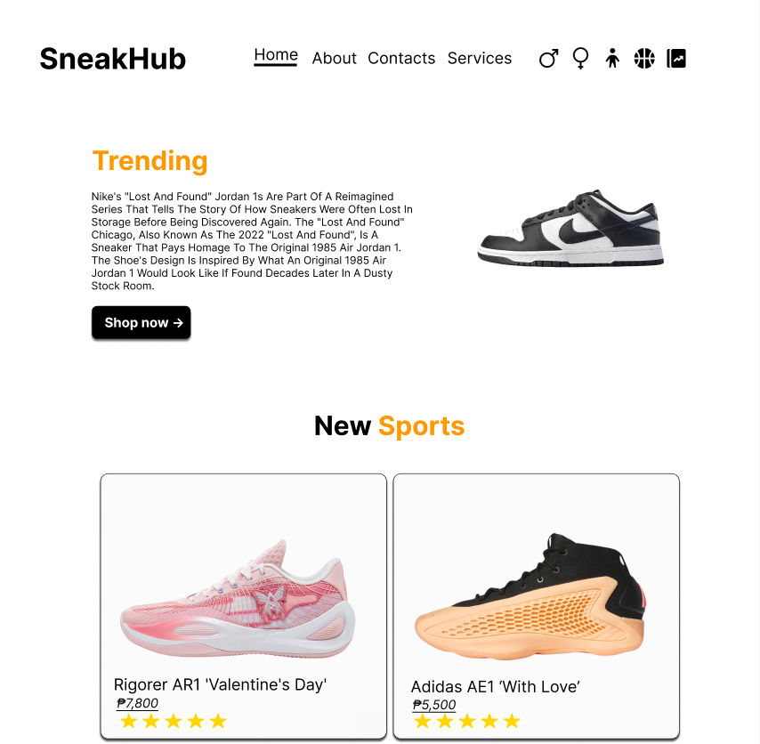

Project Case Study
SneakHub
A clean online footwear catalog that helps shoppers discover shoes for men, women, and children through a simple, visually focused browsing experience.
The problem
Footwear catalogs can become cluttered when products, categories, and promotional content compete for attention. The interface needed to remain easy to scan without losing its retail personality.
The solution
SneakHub uses a restrained black, white, and orange visual system, a focused navigation structure, and product-led layouts that guide visitors from featured content into footwear collections.
My contribution
- Planned the visual direction and page hierarchy.
- Designed the navigation, promotional area, and product cards.
- Implemented the front-end interface and responsive layout.
- Created a consistent catalog experience across product categories.
Key decisions
- High-contrast visual identity for quick recognition
- Large product imagery as the main browsing signal
- Simple categories for men, women, and children
- Clear calls to action without checkout complexity
Project visuals
The brand mark and storefront overview show the visual identity and core catalog experience.

Challenge and response
The main challenge was balancing promotional copy with large product imagery. I used whitespace and a strong typographic hierarchy so the shoes remain the clearest visual focus.
What I learned
This project strengthened my understanding of layout hierarchy, visual branding, reusable product cards, and translating a retail concept into a functional front-end experience.
Want to discuss this project?
I can walk through the design decisions and front-end implementation during an interview.